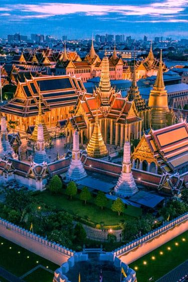
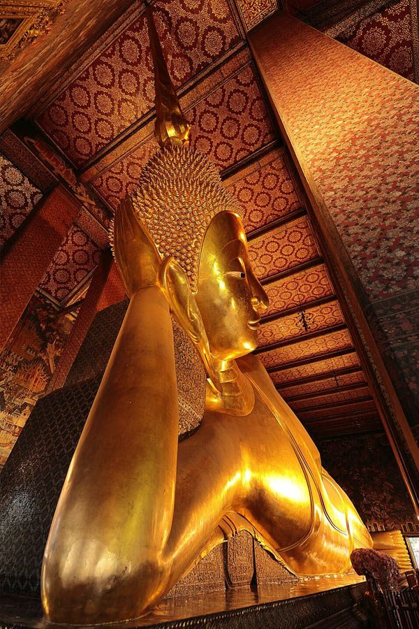

The Grand Palace is Thailand's most important cultural landmark and sacred royal complex, serving as the official residence of Thai kings for 150 years (1782-1932). This spectacular 218,000-square-meter complex houses the revered Emerald Buddha Temple (Wat Phra Kaew), stunning traditional Thai architecture, and priceless royal artifacts that showcase centuries of Thai artistic achievement.
Built by King Rama I when he established Bangkok as the capital, the Grand Palace represents the pinnacle of traditional Thai craftsmanship with its golden spires, intricate murals, and elaborate architectural details. The complex continues to serve as a ceremonial venue for state functions and royal ceremonies, maintaining its significance in contemporary Thai culture.
For Royal Ivory Hotel guests, visiting the Grand Palace offers an unparalleled cultural experience that provides deep insight into Thai history, Buddhism, and royal traditions. The journey combines spiritual significance, artistic beauty, and cultural education in one of Southeast Asia's most magnificent royal complexes.
The centerpiece of the Grand Palace complex is Wat Phra Kaew, home to Thailand's most sacred Buddhist image - the Emerald Buddha. This revered statue, carved from a single block of jade (not emerald), is considered the spiritual protector of Thailand and draws millions of pilgrims and visitors annually.
Wat Phra Kaew showcases the finest examples of traditional Thai temple architecture with golden chedis, intricate murals depicting Buddhist stories, guardian demons (yaksha), and elaborate decorative elements using gold leaf, colored glass, and precious stones.
The Grand Palace is located on historic Rattanakosin Island in old Bangkok, accessible via boat along the Chao Phraya River for a scenic approach, or by taxi through the city. The boat journey provides cultural context and beautiful river views.
Total Cost: ~100 Baht | Journey Time: 45-60 minutes | Experience: Scenic river views
🚤 Travel Tip from Royal Ivory: Take the morning boat journey (8:00-9:00 AM) for cooler weather and arrive when Grand Palace opens at 8:30 AM. The boat ride offers beautiful views of traditional Bangkok life along the river and creates anticipation for the cultural experience ahead.
| Site | Entrance Fee | Opening Hours | Includes |
|---|---|---|---|
| 👑 Grand Palace Complex | 500 Baht (foreigners), FREE (Thais with ID) | 08:30-15:30 daily | Emerald Buddha Temple, Royal Museums |
| 🔊 Audio Guide | 200 Baht additional | Available at entrance | Detailed commentary in multiple languages |
| 👔 Clothing Rental | 200 Baht deposit | Available at entrance | Appropriate clothing for dress code |
| 📸 Photography | FREE (restrictions apply) | During opening hours | No photos inside Emerald Buddha Temple |
Required for entry:
Clothing rental available at entrance for visitors not meeting dress code (200 Baht deposit).

Wat Pho Temple is located just 5 minutes' walk from the Grand Palace and houses the famous Giant Reclining Buddha, making it the perfect complement to your royal palace visit. This temple complex offers a different but equally important cultural experience.
Wat Pho houses Thailand's most prestigious traditional massage school, founded in 1955. Visitors can experience authentic Thai massage performed by certified practitioners in a historic temple setting (400-800 Baht for 30-60 minute sessions).
Grand Palace + Wat Pho creates the ideal Bangkok cultural day: royal splendor at the palace, followed by spiritual serenity at Wat Pho. Both sites showcase different aspects of Thai Buddhist culture and provide comprehensive insight into Thai heritage.
Combined visit time: 5-6 hours total | Walking distance: 5 minutes between sites
The Grand Palace complex contains numerous buildings, each representing different periods of Thai architecture and serving specific royal functions. Understanding these highlights enhances appreciation of the cultural and historical significance.
The palace showcases traditional Thai decorative arts including gold leaf application, colored glass mosaics, intricate wood carving, traditional Thai painting, ceramic work, and metalwork. Every surface demonstrates the incredible skill of Thai artisans across multiple centuries.
Beyond its architectural beauty, the Grand Palace represents the heart of Thai cultural identity, combining royal heritage, Buddhist spirituality, and national symbolism in a living monument that continues to play important roles in modern Thailand.
🙏 Respectful Visiting Guidelines:
Silent reverence: Keep voices low, especially in Emerald Buddha Temple
Photography rules: No photos inside Emerald Buddha Temple, flash photography prohibited
Buddha respect: Never turn back toward Buddha images, point feet toward statues
Sacred space: Remove hats when entering temple buildings
Cultural appreciation: Take time to read informational plaques and understand significance
Strict dress code: covered shoulders and knees required. No tank tops, shorts, mini skirts, or revealing clothing. Proper closed-toe shoes required. Clothing rental available at entrance for 200 Baht deposit. Traditional Thai clothing preferred for showing respect.
Grand Palace entrance fee is 500 Baht for foreign visitors (includes Emerald Buddha Temple). Thai nationals enter free with ID. Audio guide available for additional 200 Baht. Tickets include same-day access to several royal museums within the complex.
Take BTS to Saphan Taksin, then Chao Phraya Express Boat to Tha Chang pier (Grand Palace pier). Total journey: 45-60 minutes, cost ~100 Baht. Alternatively, taxi direct (30-45 minutes, 150-250 Baht depending on traffic). Boat journey offers scenic views.
Allow minimum 3-4 hours for Grand Palace and Emerald Buddha Temple. Add 2 hours for nearby Wat Pho. Full cultural day with both sites requires 5-6 hours. Early morning visits (8:30-10:00 AM) offer cooler weather and fewer crowds.
Photography is allowed in most areas of the Grand Palace complex, but strictly prohibited inside the Emerald Buddha Temple. No flash photography anywhere. Respect photography restrictions and be mindful when taking photos of people praying or in ceremonial areas.
🏛️ Optimal Visit Plan:
8:30 AM: Arrive when Grand Palace opens for cooler weather and fewer crowds
9:00-12:00: Explore Grand Palace and Emerald Buddha Temple thoroughly
12:00-13:00: Lunch break at nearby restaurant
13:00-15:00: Visit Wat Pho Temple and experience traditional Thai massage
15:00-16:00: Optional visit to Wat Arun Temple across the river
The Grand Palace area offers multiple cultural attractions within walking distance: Wat Pho Temple (5 minutes), National Museum (10 minutes), Wat Arun Temple (boat ride across river), and Chinatown (15 minutes by taxi). Plan a full day exploring historic Bangkok's cultural treasures.